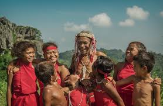
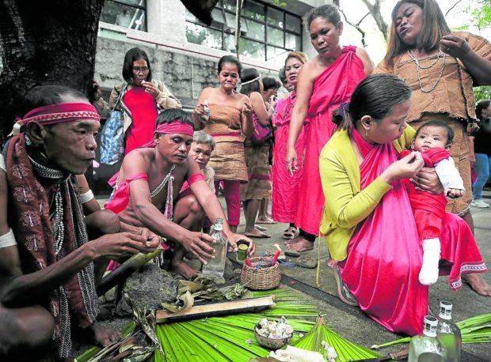

Culture of Dumagats
Traditional Clothing
The Dumagat people from Tanay, Rizal, have a distinct traditional clothing that is deeply rooted in their cultural heritage. The women typically wear a tapis, which is a skirt wrapped around their bodies. Meanwhile, the men don the bahag, a traditional breechcloth. Interestingly, breastfeeding mothers among the Dumagat community wear a unique garment called the uban, a piece of fabric slung from the shoulders.
Beyond the clothing itself, the Dumagat people also incorporate traditional body decoration practices, particularly among the men. Many Dumagat men scar their bodies using intricate designs that have been passed down through generations. These body markings hold significant cultural meaning and are an important aspect of their identity.
The Dumagat's traditional attire and body adornments reflect the deep-rooted cultural traditions that have been preserved within their community. These unique sartorial and decorative practices continue to be an integral part of the Dumagat people's way of life in Tanay, Rizal, serving as a tangible expression of their rich cultural heritage.
Dumagat Customs
The Dumagat people from Tanay, Rizal, have a rich cultural heritage that is deeply rooted in their traditions. Their customs are shaped by their close relationship with nature and their strong sense of community. For instance, marriage is a simple conversation between the two parties involved, with no formal ceremony.
Rituals

The Dumagat tribe from Tanay, Rizal, has a rich cultural heritage that includes various rituals and ceremonies. One notable ritual is the rain ritual, which is performed to summon rain amid concerns over the water level in the Angat Dam. The ritual involves gathering early, lighting a fire, drawing fresh blood from a chicken, and performing prayers and chants while using branches to whip water from a nearby river. This ritual is a testament to the tribe's deep connection with nature and their reliance on the land for their livelihood.
Another significant aspect of Dumagat culture is their ancestral worship. They believe in the spirits of their ancestors, known as Anitos, and perform rituals that include dances and depictions of hunting movements. These rituals are an integral part of their cultural identity and are often performed to honor their ancestors and seek their guidance.